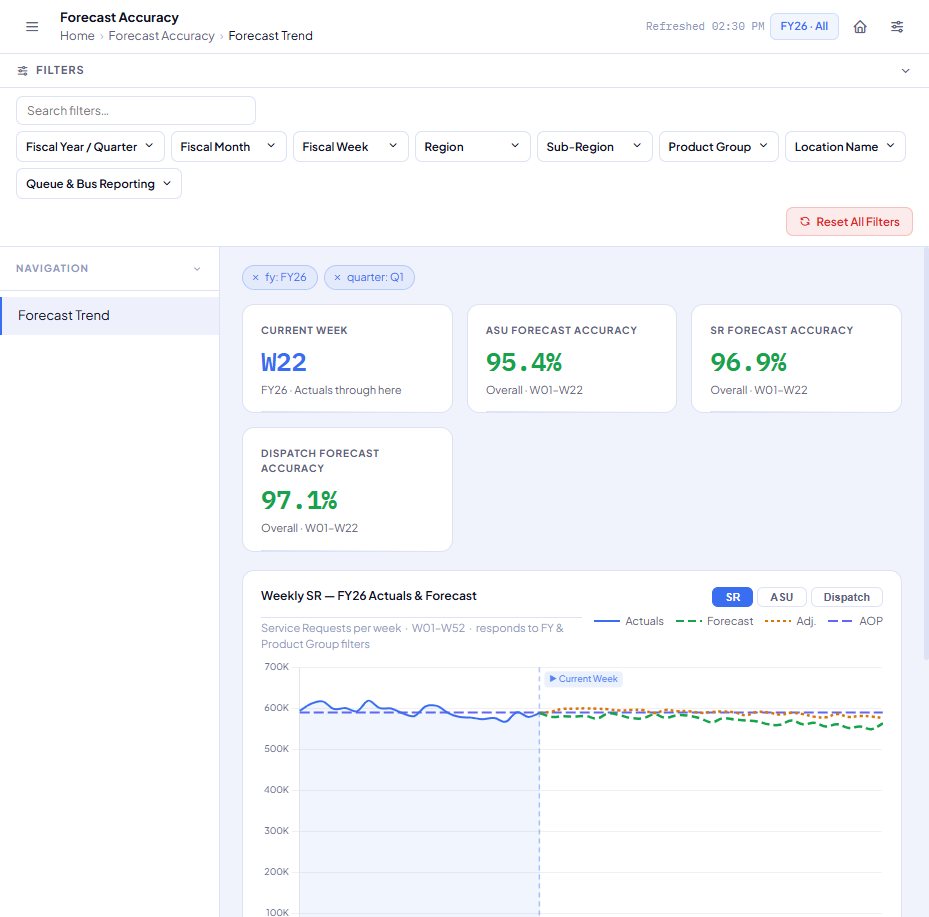
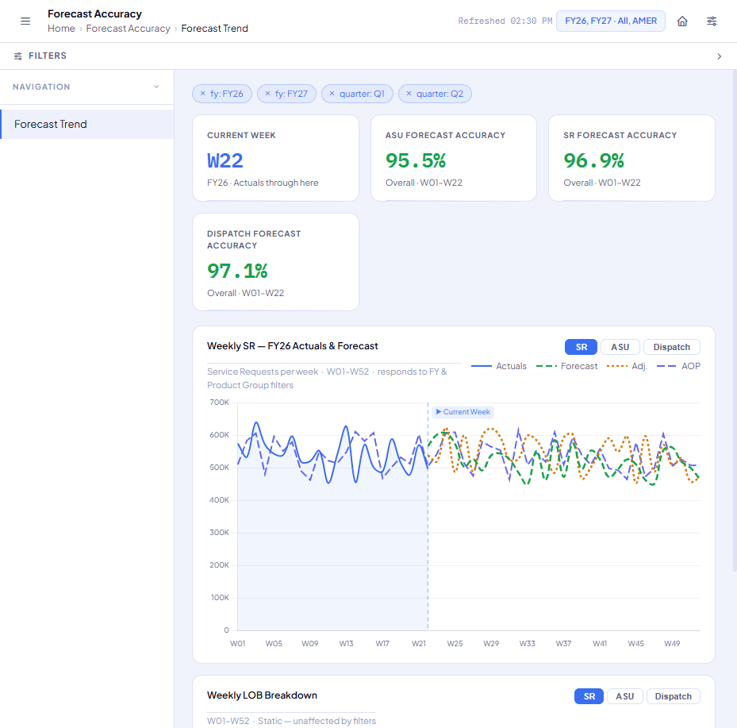
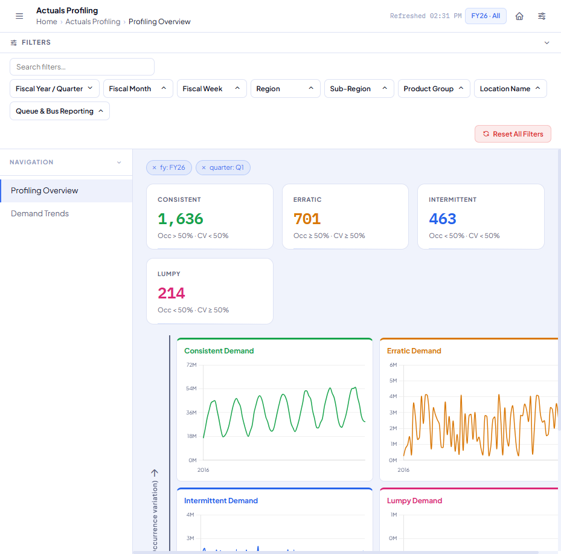
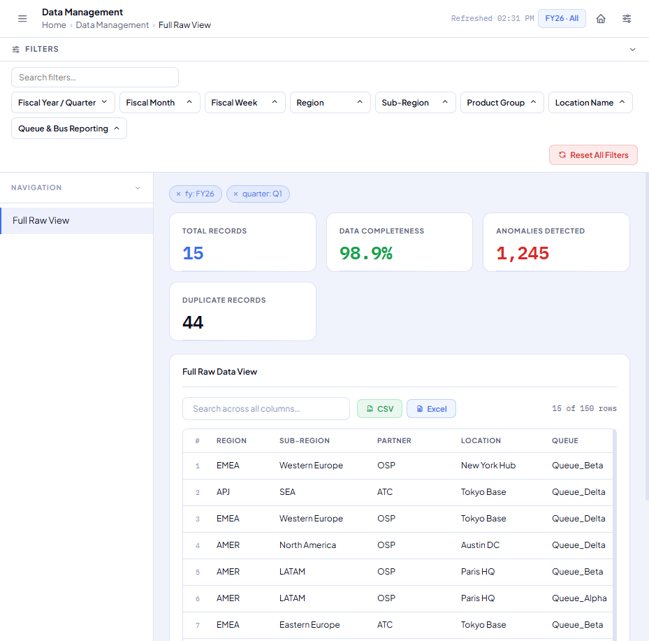
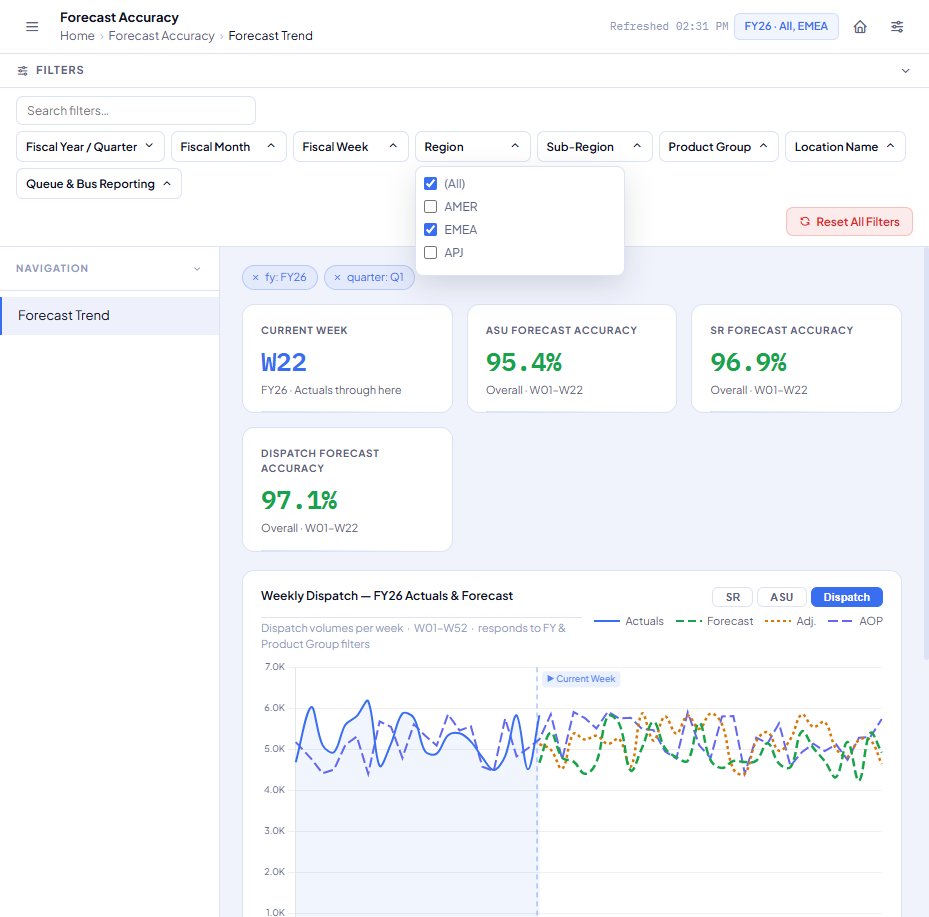
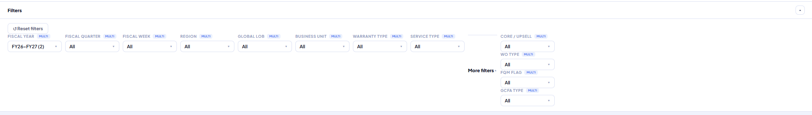
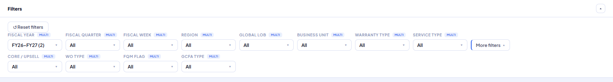
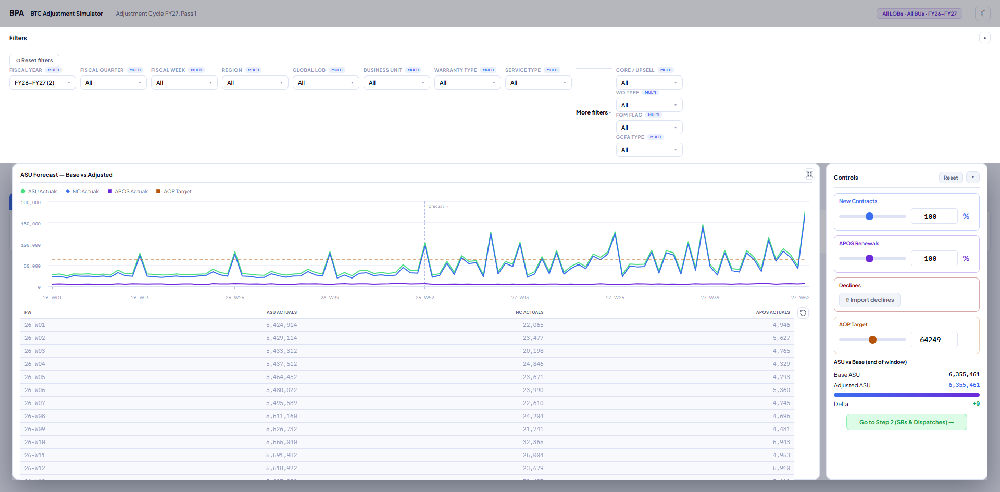
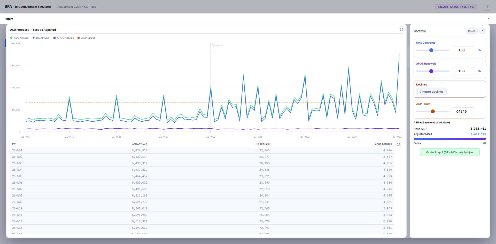

Right-side rail → collapsible top bar, verified across both dashboards on branch master_html
Both dashboards' filter panels were moved from a right-side rail to a collapsible top bar — BPA_FORCASTING_MOCK.HTML's #right-panel and template_ui/btc_adjustment_simulator_v2.html's #frail. In both files this was a real edit to the production markup/CSS, not a rebuild: the same IDs, the same JS functions (toggleRightPanel(), toggleDropdown(), toggleRail(), renderRail(), resetFilters()) were kept untouched, only the layout CSS changed.
This report is the QA pass over that change: every filter field on both files, driven through a real browser (Canary), plus one bug the owner caught by eye that automated DOM-state checks had missed — found, root-caused, fixed, and re-verified below.
Forecast Accuracy, Actuals Profiling, Data Management — same shared #right-panel, tested on all three
| Filter group | data-group | Tested value | Result |
|---|---|---|---|
| Fiscal Year | fy | FY26 / FY27 | PASS |
| Fiscal Quarter | quarter | Q1–Q4 | PASS |
| Fiscal Month | month | M1 | PASS |
| Fiscal Week | week | W1 | PASS |
| Region | region | AMER | PASS |
| Sub-Region | subregion | North America | PASS |
| Product Group | lob | TET | PASS |
| Location Name | location | New York Hub | PASS |
| Queue & Bus Reporting | queue | Queue_Alpha | PASS |
Clicking the .filter-header row collapses the whole filter body and re-expands it cleanly, both directions. Reset All Filters restores FY26/Q1 defaults with no errors. The identical bar (same position, same 8 groups) renders correctly on Forecast Accuracy, Actuals Profiling, and Data Management.




Its own .ft-metric-btn ASU/SR/Dispatch switcher and the Weekly LOB Breakdown card's dot-legend (.lob-legend/.lob-dot) both work independently of the top filter bar. The ASU-accuracy KPI correctly moves with the Fiscal Year filter (95.4% → 95.5% on FY27) and correctly does not move with Region — that's the real, documented formula (95.4% + (fyMult-1)×1.8), not a bug.

ASUs / SRs / Dispatches / Publish tabs — same shared #frail, tested on all four
| Filter field | Group | Tested value | Result |
|---|---|---|---|
| Fiscal Year | Main (always visible) | FY26–FY27 | PASS |
| Fiscal Quarter | any | PASS | |
| Fiscal Week | any | PASS | |
| Region | AMERICAS | PASS | |
| Global LOB | any | PASS | |
| Business Unit | Unit A | PASS | |
| Warranty Type | Premium | PASS | |
| Service Type | any | PASS | |
| Core / Upsell | Behind "More filters" | any | PASS |
| WO Type | any | PASS | |
| FQM Flag | any | PASS | |
| GCFA Type | any | PASS |
Selecting Region → AMERICAS live-updated the ASU Actuals KPI (6,355,461 → 3,231,116); Reset filters reverted it exactly. The floating funnel button (#freopen) correctly stays hidden now that the header row is always visible — it's redundant, not broken. The same bar renders and functions identically on all 4 tabs.
The first automated pass checked DOM/checkbox state (did the value toggle, did the chart update) and reported a clean pass — but never actually looked closely at the rendered layout. The owner caught it by eye: clicking "More filters" produced a tall, mostly-empty bar with the 4 extra fields stacked in a vertical column far to the right.


#frailBody is a display:flex; flex-wrap:wrap row. The "More filters" toggle's content, .moreblk, was a plain display:block box when opened — so its 4 child .fitems stacked vertically inside it (normal block flow). But .moreblk itself was still a flex-item sibling of the other 8 filters in that same row (the container was wide enough that nothing wrapped to a new line), and flexbox's default align-items:stretch stretched the entire row to match that tall sibling — leaving the 8 normal-height filters floating in a sea of dead space.
.moreblk.open itself a flex-wrap rowChanged .moreblk.open{display:block} to display:flex;flex-wrap:wrap;gap:8px;align-items:flex-end — matching #frailBody's own layout, so the 4 extra fields lay out horizontally and wrap onto their own compact row instead of stacking. Also restyled .morehdr ("More filters" itself) from a full-width section-divider header (designed for the old vertical rail) into a compact pill button matching the other filter buttons.
| Check | Before | After |
|---|---|---|
| 4 extra fields layout | Stacked vertical column | Horizontal row, wraps under row 1 |
| Panel height, expanded | 250px+ (dead space) | 184px (133px base + 51px for the new row) |
| Collapse afterward | — | Returns to exact original 133px, no artifacts |
| Console errors | — | None |
The BTC file's "expand chart to fullscreen" feature had CSS hardcoded to the old right-side rail's geometry (right:276px to avoid the rail, a fixed top:52px). Moving the rail to the top would have made that geometry wrong — fixed properly (not by removing the "filters stay usable while a chart is expanded" feature) by computing the offset dynamically: toggleExpand()/toggleRail() now set a --frail-h CSS custom property from the rail's live rendered height, and .expanded's top uses calc(52px + var(--frail-h, 0px)).


Confirmed stable at 200ms, 1000ms, and 2500ms after triggering (no layout jump/flicker), and confirmed in both directions (expand-then-collapse-rail and the reverse). Zero console errors.
Two Canary sessions recorded the systematic pass through every field above, one step per interaction, each bundled into a self-contained report.html with a video, Playwright trace, network HAR, and console log per step:
Open either path directly in a browser, or run npx @usecanary/ui to browse all recorded sessions.